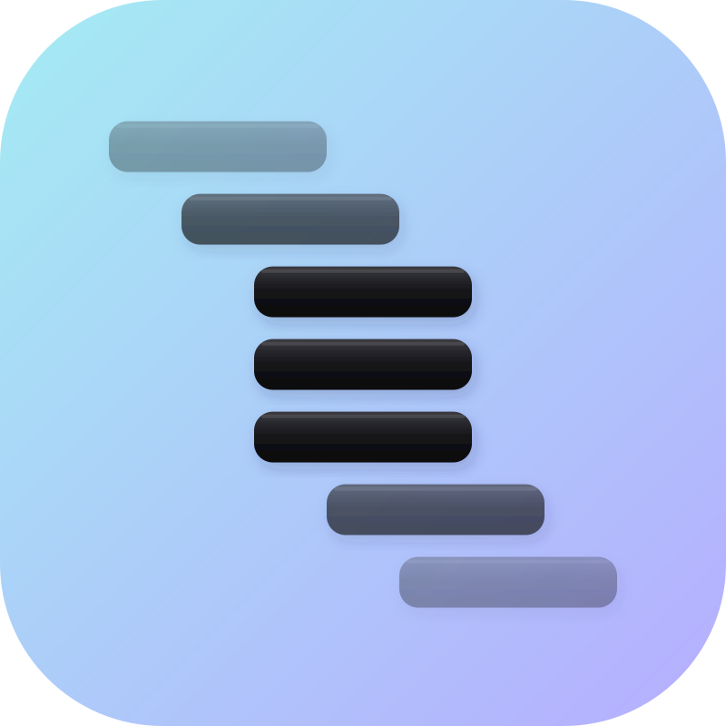

less-sheetOpen huge spreadsheets instantly.
less-sheet is a native, read-only viewer for spreadsheet-sized data. It reads CSV — plain, gzipped, or streamed straight from a URL — and nothing else, which is exactly why it opens two gigabytes as fast as five hundred megabytes.
DRAFT NUMBERS — NOT YET RE-MEASURED
free · macOS 26+ · Linux (GNOME 49 generation)

— placeholder, not a broken image —
It never loads the file.
less-sheet does for tabular data what less does for text:
it maps the file and parses only the rows in view. Opening costs
milliseconds at any size, and memory stays flat while you scroll
through gigabytes.
Jump to row 100,000,000 and it lands there without reading what came before. Anything that isn’t instant shows progress and can be cancelled; nothing ever blocks the window.
Point it at an HTTP(S) URL and it behaves the same way — only the bytes you actually look at are ever fetched.

Change how it’s parsed without reopening it.
Separator, quote character, header row and text encoding are detected from the file itself. You open the file and read it — there is no import step.
When a guess is wrong, each of those is a live control: change it and the open document re-renders in place. No closing, no re-importing, no starting over.

Search a file you can’t open anywhere else.
Incremental search with live match counts. Typed column predicates —
qty ≤ 2 — and filtered views that keep the original row
numbers, so you always know where you are in the real file.
Copying returns the original bytes, not whatever the screen happens to be formatting.


Why a spreadsheet struggles here.
Excel and LibreOffice are built to edit and compute, and that design has costs a viewer doesn’t pay.
less-sheet is read-only by design. Formatting is a display transform over untouched bytes — what you see never becomes what your file contains.
| Excel · LibreOffice | less-sheet | |
|---|---|---|
| opening | Imports the whole file before showing anything | Shows the viewport; reads nothing else |
| row limit | 1,048,576 | None |
| your values | Rewritten on import unless you catch it — leading zeros
dropped, 1-5 becomes a date, long IDs go
scientific |
Never modified; copy returns the original |
| separator, quote | A one-shot import dialog, before you see the data | Live controls, after |
| memory | Scales with the file | Flat |
Download.
Free. No account, no telemetry. Checksums are published beside every build.
reads: .csv · .csv.gz · https://
more formats later — nothing else today
macOS
macOS 26.0+ · Apple silicon · ~3.3 MB
reads csv · csv.gz · http(s)
Linux
x86_64 · ~0.8 MB ·
aarch64
glibc 2.34+ · GTK 4.20 · libadwaita 1.8
Fedora 43+ and current Arch.
Debian 13 ships GTK 4.18 and will not run this build.
reads csv · csv.gz · http(s)
SHA256SUMS LINKS NOT LIVE — DOWNLOAD_BASE AND VERSION ARE PLACEHOLDERS